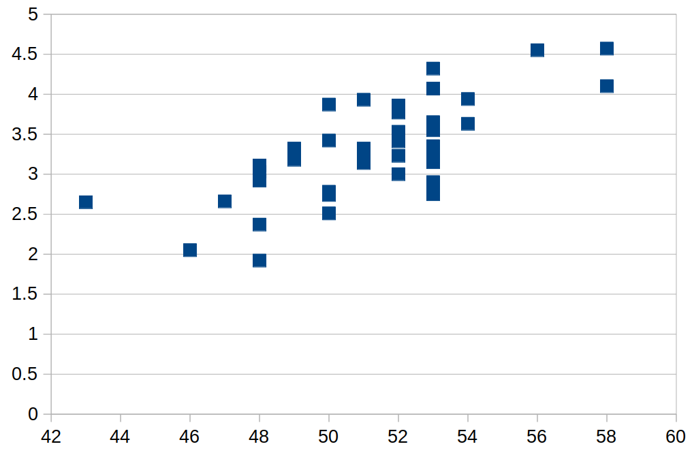
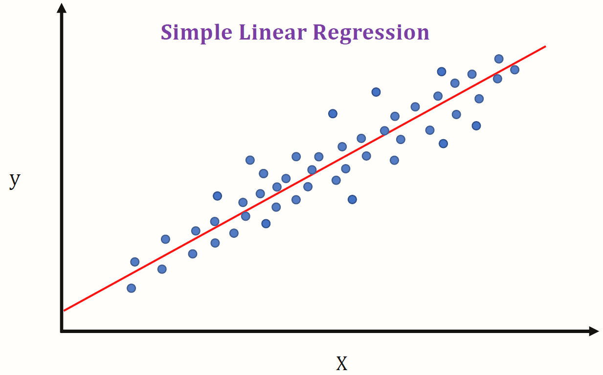
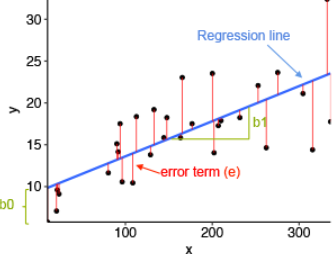

4.2 Covariance, Correlation, Regression
When doing science, we often want to study the relation between two observables A and B. Most of the time, we want to foresee the future with partial information:
Can we foresee the behavior of
Aby knowingB? Or maybe the opposite? When one grows, what happens to the other?
We will use the following data to exemplify the following techniques:
1 Manual Experiment
The class will compile a list with the following information:
- Height
- Shoe size
- Number of brothers and sisters
We will make a graph with this information in Excel. What values seem to grow together? Which values seem to have no relation between them.
2 Correlation
Correlation is a measure of how two things behave similarly. For example:
- People’s height is positively correlated with their weight – that’s because a bigger height in general means a bigger weight.
- In a house, the amount of people is negatively correlated with the amount of space per person – that’s because the more people you have, the less space each one can have for themselves.
These behaviors can be seen in a graph. For example, look at this graph:

As we can see, the values tend to grow from the left to the right, together. This is the sign of a positive correlation.
Mathematically, there is a formula for correlation, which takes value from -1 up to 1. It goes from negatively correlated (-1), to uncorrelated (0) to positively correlated (1).
2.1 Formula
In order to calculate correlation, one needs sequences pairs of numbers. These sequences will be written x_1, ..., x_n and y_1, ..., y_n. Writing M_x for the average of x and M_y for the correlation of y, then the formula for correlation is:
r\_{xy} = \frac{\sum\_{i=1}^n (x_i-M_x) (y_i-M_y)}{\sqrt{\sum\_{i=1}^n (x_i-M_x)^2} \sqrt{\sum\_{i=1}^n (y_i - M_y)^2}}
2.2 In Excel
In Excel, the correlation between two data sets can be calculated using the CORREL(A1:A100,B1:B100) function, replacing the data ranges by the desired values.
2.3 Exercises
In the babies data set, there are many measurements. For any pair of measurements, we can:
- Create a X-Y scatter plot to visualize the data
- Analyze it, and try to infer if there is a positive, negative or no correlation.
- In a separate cell, measure the correlation using
CORREL.
Some interesting pairs for doing it are:
- Size and weight
- Size and number of cigarettes smoked by the mother
- Weight and number of cigarettes smoked by the mother
- Size and father height
- Size and father years of education
3 Regression
In the section above we studied correlation. In some cases, such as weight and size, there is a very clear relation between the two variables. This deserves a question: can we model this relation with a straight line?

Look at the graph above: each blue dot has a coordinate (x,y). The straight line, is also composed by pairs of coordinates, such as the points, but its points follow a rule: y = \beta + \alpha x In this formula, there are two coefficients:
- \beta is the intersection coefficient: y = \beta when x = 0
- \alpha is the inclination coefficient: it measures the speed of increase or decrease of the variable
How should we draw this line? After all, we can draw any line in the graph, and it will be a model – but its quality can be better or worse, depending on the coefficients.
In order to choose the coefficients, we evaluate the error term:

The error term measures the difference between the measured value (one of the y_k values) and the value predicted by the model (calculated by \beta + \alpha x_k). The best model is the one which makes the error, measured by: \epsilon(\alpha,\beta) = \sum_{k = 1}^n (y_k - \beta - \alpha x_k)^2 as small as possible. The square (²) is there to make calculations easier.
If we use this criterion, we can calculate the regression coefficients as:
\beta = M_y − \alpha M_x
and
\alpha = r_{xy} \frac{\sigma_y}{\sigma_x}
where M represents the mean, r the regression coefficient, and \sigma the standard deviation.
3.1 Practice
Choose a pair of measurements. For this pair we will create a table with:
- Average of x (M_x)
- Average of y (M_y)
- Standard deviation of x (\sigma_x)
- Standard deviation of y (\sigma_y)
- Correlation of x and y (r_{xy})
- The \beta coefficient
- The \alpha coefficient
- The optimal \beta
- The optimal \alpha
Next to it, two columns:
- One with the prediction \beta + \alpha x
- Another with the error y − \beta − \alpha x
4 Control
Download the following:
And follow the instructions. We will make rounds so all students can do the control by themselves.